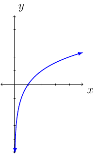
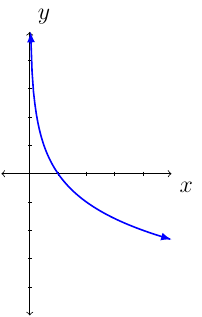

Section 4.3
Definition and Properties
The exponential function is \(f(x)=a^x\).
Let \(f(x)=2^x\). Consider \(f(2)=2^2=4\) and \(f(3)=2^3=8\). Since \(f\) is continuous on \([2,3]\), \(f(2)=4\), and \(f(3)=8\), we know, by the intermediate value theorem there exists a \(c\) in \([2,3]\) such that \(f(c)=7\). In fact, there is a number such that \(2^x\) is 5,6, or 7.
Remember, \(\sqrt{4}=2\) because \(2^2=4\). We want to find/name a function such that \(f(8)=3\) because \(2^3=8\).
Definition 49
For all real numbers \(y\) and all positive numbers \(a\) and \(x\), where \(a\ne 1\). Then \(y=\log_a (x)\) if and only if \(x=a^y\).
Like, \(\sqrt{4}=2\) because \(2^2=4\) we have: \(3=\log_2(8)\) because \(2^4=8\).
Definition 50
If \(a>0\), \(a\ne 1\) and \(x>0\), then the logarithm function with base \(a\) is
The domain is \((0,\infty)\) (which is the range of \(a^x\) function).
The range is \((-\infty,\infty)\) (which is the domain of \(a^x\) function).
The function \(f\) is continuous on \((0,\infty)\).
If \(0<a<1\), then \(f\) is decreasing on its domain.
if \(a>1\), then \(f\) is increasing on its domain.
The graph of \(f\) has vertical asymptote \(x=0\).
The graph passes through \((\frac{1}{a},-1)\), \((1,0)\), and \((a,1)\).
The graph of the logarithmic function changes based on the value of \(a\).
The graph of \(f(x)=\log_a(x)\) when \(a>1\) we have:

The graph of \(f(x)=\log_a(x)\) where \(0<a<1\) we have:

If \(f(x)=a^x\) then \(f^{-1}(x)=\log_a(x)\). Therefore, by definition, we have:
and
Since \(a^1=a\) we have \(\log_a(x)=1\).
Since \(a^0=1\) where \(a\ne 0\) we have \(\log_a(1)=0\).
Property 13 (Laws of Logarithms)
Let \(A\), \(B\), and \(a\) be positive real numbers where \(a\ne 1\).
\(\log_a(AB)=\log_a(A)+\log_a(B)\)
\(\log_a(\frac{A}{B}) = \log_a(A)-\log_a(B)\)
\(\log_a(A^n) = n\log_a(A)\)
Examples
Example 71
Use the properties of the logarithm to expand the following expression. Assume all variables are positive.
Solution:
Example 72
Use logarithm properties to write the expression as a single logarithm with coefficient one. Assume all variables are positive.
Solution:
Example 73
Let \(\log_{10}(7)\approx 0.8451\). Evaluate the following:
Approximate \(\log_{10}(49)\).
Solution:
Approximate \(\log_{10}(70)\).
Solution:
More Examples
Example 74
Use properties of logarithms to rewrite the expression. Assume all variables are positive.
Solution:
Example 75
Write the expression as a single logarithm with a coefficient of 1. Assume all variables represent positive real numbers.
Solution:
Example 76
Solve the equation.
Solution:
Remember \(a^{\log_a(x)}=x\) and \(\log_a(a^x)=x\).
Example 77
Solve \(\log_{\frac{1}{2}}(x+3)=-4\).
Solution:
Remember \(\left(\frac{1}{2}\right)^{\log_{\frac{1}{2}}(x)}=x\). This also means:
The equation \(\log_{\frac{1}{2}}(x+3)=-4\) will be composed both sides by the exponential function base \(\frac{1}{2}\).
Like square root equations, we must check the solution:
This verifies the equation.
Example 78
Let \(f(x)=5^x+1\). Find \(f^{-1}(x)\).
Solution:
First, \(y=5^x+1\) and swap the \(x\) and \(y\) variables. Then solve for \(y\). Remember \(\log_5(5^x)=x\) and \(\log_5(5)=1\).
This means, \(f^{-1}(x)=\log_5(x-1)\).
Example 79
Let \(f(x)=\log_{10}(2x)\). Find \(f^{-1}(x)\).
Solution:
First, \(y=\log_{10}(2x)\) and swap the \(x\) and \(y\) variables. Then solve for \(y\). Remember \(10^{\log_{10}(x)}=x\).
This means, \(f^{-1}(x)=\frac{1}{2}\cdot 10^x\).
Example 80
Solve \(\left(\frac{1}{3}\right)^{x+1}=9^x\).
Solution:
First, we will want to rewrite the equation as an exponential expression base \(3\).
Next, use the fact \(\log_3(3^x)=x\).